(MHz)
(arcsec)
0.28 ± 1.31 (Dec)
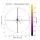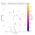
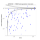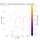
-0.65 ± 2.93 (Dec)
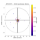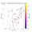
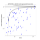

1.01 ± 2.55 (Dec)
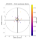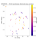
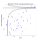
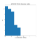
| SBID | Project | Date | Duration (hours) |
Field Centre | Central Frequency (MHz) |
|---|---|---|---|---|---|
| 2018-12-15T04:52:16.5 | 10:54:10.2518 +58:01:13.9996 | 1358.79 |
| APERCAL version |
APERCAL path |
Synthesised Beam (arcsec) |
Median r.m.s. (uJy) |
Image peak (Jy) |
Dynamic Range | Sky Area (deg2) |
|---|---|---|---|---|---|---|
| 16.7 x 12.8 | 50 | 0.02 | 2E+02 | 11.66 |
| Source Finder | Flux Type | Number of sources (≥5.0σ) |
Multi-component islands |
Sum of image flux vs. sum of catalogue flux |
Median in-band spectral index | Median int/peak flux | Source Counts χred2 |
|---|---|---|---|---|---|---|---|
| aegean | integrated | 128 | 9 | 0.3 Jy vs. 0.4 Jy | 1.14 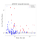 | 9.46 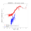 |
| Survey | Frequency (MHz) |
Cross-matches | Median offset (arcsec) |
Median flux ratio | Median spectral index |
|---|---|---|---|---|---|
| FIRST | 1400.0 | 73 | 0.18 ± 1.13 (RA) 0.28 ± 1.31 (Dec) 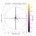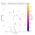 |
0.17 ± 0.22 (extrapolated) 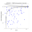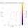 | |
| NVSS | 1400.0 | 71 | 0.65 ± 3.61 (RA) -0.65 ± 2.93 (Dec) 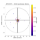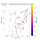 |
0.09 ± 0.12 (extrapolated) 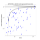 | |
| TGSS | 150.0 | 44 | -0.41 ± 2.92 (RA) 1.01 ± 2.55 (Dec) 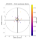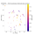 |
0.04 ± 0.04 (extrapolated) 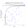 |
-2.30 ± 0.79 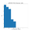 |
| Flux Ratio (APERTIF / FIRST-extrapolated) |
Flux Ratio Uncertainty (APERTIF / FIRST-extrapolated) |
Positional Offset (arcsec) (APERTIF — FIRST) |
Positional Offset Uncertainty (arcsec) (APERTIF — FIRST) |
Resolved Fraction from int/peak Flux (APERTIF) |
Source Counts χred2 (APERTIF) |
r.m.s. (uJy) (APERTIF) |
|---|---|---|---|---|---|---|
| 0.17 | 0.22 | 0.34 | 1.73 | 0.22 | 9.46 | 50 |
Generated at 2019-03-15 19:34:15